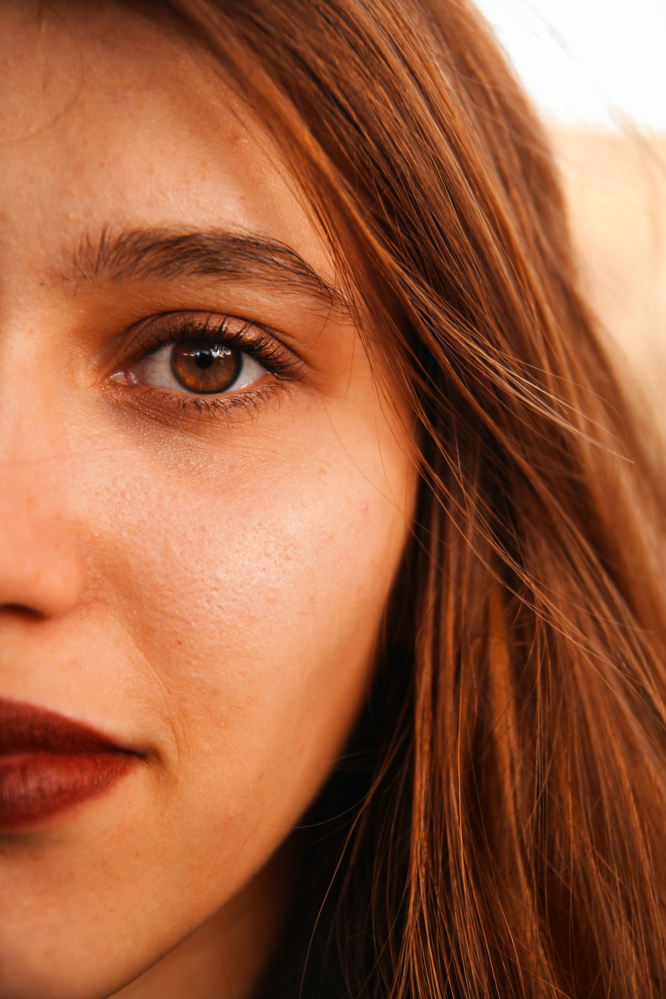
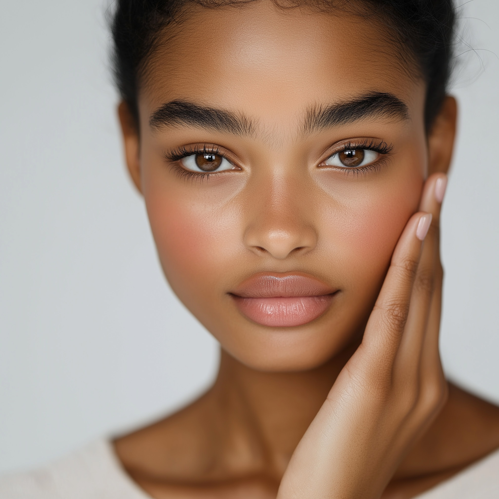

🌅 Temperatura Cálida
Venas verdosas · Subtono dorado / amarillo

C1A
C1A
Clara cálida
Color claro con tendencia a pieles amarillas. Ideal para pieles muy blancas con subtono dorado.
M1A
M1A
Media cálida
Color medio con tendencia a pieles amarillas. El tono más popular en Costa Rica.

O3A
O3A
Oscura cálida
Color oscuro con tendencia a pieles amarillas. Para pieles morenas con subtono dorado.
❄️ Temperatura Fría
Venas azul-moradas · Subtono rosado / frío

C1
C1
Clara fría
Color claro con tendencia a pieles rosáceas. Pieles blancas con subtono rosado o azulado.

M1
M1
Media fría
Color medio con tendencia a pieles rosáceas. Muy común en Latinoamérica.

O3
O3
Oscura fría
Color oscuro con tendencia a pieles rosáceas. Para pieles morenas con subtono frío.